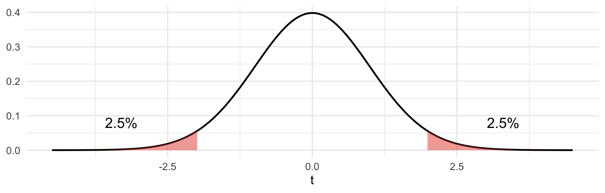
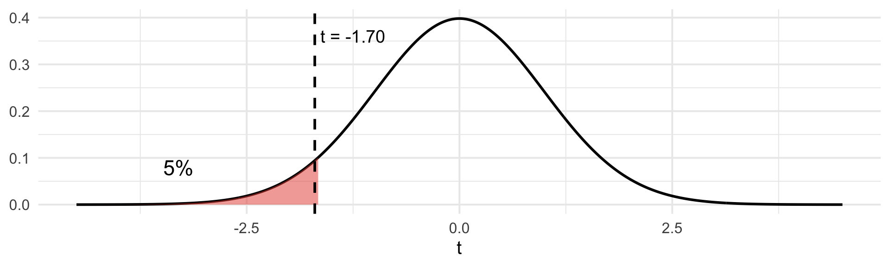

Estimate Std. Error t value Pr(>|t|)
(Intercept) 152.0903 7.5482 20.1491 0
fico -0.1386 0.0109 -12.6630 0ECON 300 · Applied Statistics for Economists
2026-11-10
Hour 1 · Theory
Hour 2 · Code
summary()anova()Reading: Stock & Watson §5.1–5.2, §6.2–6.4, §7.1–7.2 · Due Wed 11/11, 11:59 PM: Classwork 3-1
Thursday’s portfolio:
Estimate Std. Error t value Pr(>|t|)
(Intercept) 152.0903 7.5482 20.1491 0
fico -0.1386 0.0109 -12.6630 0The estimate is \(-0.139\). Its standard error is \(0.011\). So the estimate sits about 12.7 standard errors below zero.
Today’s question: how many standard errors away from zero is “far enough” to rule out luck? And what if we want to test several coefficients at once?
You are on a card loss forecasting team. Banks forecast losses for reserves and for regulatory stress tests, so the team needs to know which portfolio features move charge-offs.
| Variable | Meaning | Units |
|---|---|---|
nco |
net charge-off rate: share of balances written off as lost | % per year |
unemp |
local unemployment rate | % |
util |
average credit utilization | % |
tenure |
average account age | years |
rewards |
share of accounts that are rewards cards | % |
One row = one portfolio segment (a region × product group). \(n = 120\).
Simulated data. The setting is realistic; the numbers are invented.
\[ \text{nco}_i = \beta_0 + \beta_1\,\text{unemp}_i + \beta_2\,\text{util}_i + \beta_3\,\text{tenure}_i + \beta_4\,\text{rewards}_i + u_i \]
Same OLS idea: pick the \(\hat\beta\)’s that minimize \(\sum \hat u_i^2\). Same sums of squares: \(TSS = ESS + SSR\).
New meaning: \(\beta_1\) is the change in nco for a one-point rise in unemployment, holding util, tenure, and rewards fixed (S&W §6.2).
Degrees of freedom: with \(k\) regressors we estimate \(k + 1\) coefficients, so
\[ df = n - k - 1 = 120 - 4 - 1 = 115 \]
Adjusted \(R^2\) charges for each regressor:
\[ \bar R^2 = 1 - \frac{SSR/(n-k-1)}{TSS/(n-1)} \]
Call:
lm(formula = nco ~ unemp + util + tenure + rewards, data = segs)
Residuals:
Min 1Q Median 3Q Max
-2.38535 -0.50195 0.04226 0.52957 2.78922
Coefficients:
Estimate Std. Error t value Pr(>|t|)
(Intercept) 0.544689 0.539419 1.010 0.314725
unemp 0.334698 0.047718 7.014 1.7e-10 ***
util 0.037788 0.010551 3.581 0.000502 ***
tenure -0.071478 0.042057 -1.700 0.091919 .
rewards 0.003348 0.004785 0.700 0.485494
---
Signif. codes: 0 '***' 0.001 '**' 0.01 '*' 0.05 '.' 0.1 ' ' 1
Residual standard error: 0.901 on 115 degrees of freedom
Multiple R-squared: 0.366, Adjusted R-squared: 0.344
F-statistic: 16.6 on 4 and 115 DF, p-value: 9.184e-11To test whether one coefficient equals some value \(\beta_{j,0}\) (usually 0):
When \(\beta_{j,0} = 0\), the \(t\)-statistic is just \(\hat\beta_j / SE(\hat\beta_j)\). That is R’s t value column.
\(H_0: \beta_j = 0 \quad\) vs. \(\quad H_1: \beta_j \neq 0 \qquad\) An estimate far out in either direction is evidence against \(H_0\).

\[ p = 2 \times P\big(T > |t|\big) \qquad \text{Reject at 5\% if } |t| > t_{0.975,\,df} = 1.98 \text{ (for 115 df)} \]
In R: 2 * pt(-abs(t), df) gives the \(p\)-value; qt(0.975, df) gives the critical value.
From the table: util has estimate \(0.037788\), SE \(0.010551\). tenure has estimate \(-0.071478\), SE \(0.042057\). \(\;df = 115\), \(\;t_{0.975,\,115} = 1.98\).
(a) Test \(H_0: \beta_{\text{util}} = 0\) against \(H_1: \beta_{\text{util}} \neq 0\) at the 5% level. Compute \(t\) and decide.
(b) Do the same for tenure.
(c) R reports \(p = 0.092\) for tenure. Write one sentence that says what this number means, without the words “probability that \(H_0\) is true.”
(a) \(t = 0.037788 / 0.010551 = 3.58\). \(\;|3.58| > 1.98\) → reject \(H_0\). Utilization is significantly related to charge-offs at 5%. (\(p = 0.0005\))
(b) \(t = -0.071478 / 0.042057 = -1.70\). \(\;|-1.70| < 1.98\) → fail to reject \(H_0\) at 5%. (\(p = 0.092\))
(c) If tenure truly had no effect, an estimate at least 1.70 standard errors from zero, in either direction, would happen about 9.2% of the time.
“Fail to reject” is not “accept.” We have not shown \(\beta_{\text{tenure}} = 0\); we have shown the data are not strong enough to rule it out.
If theory says the sign before you see the data (seasoned accounts default less), test only that direction:
\(H_0: \beta_{\text{tenure}} = 0 \quad\) vs. \(\quad H_1: \beta_{\text{tenure}} < 0\)

| \(H_1\) | \(p\)-value | Reject at 5% if | R |
|---|---|---|---|
| \(\beta_j < 0\) (left tail) | \(P(T < t)\) | \(t < -1.66\) | pt(t, df) |
| \(\beta_j > 0\) (right tail) | \(P(T > t)\) | \(t > 1.66\) | pt(t, df, lower.tail = FALSE) |
\(df = 115\), \(\;t_{0.95,\,115} = 1.66\).
(a) Test \(H_1: \beta_{\text{tenure}} < 0\) at 5%. Use \(t = -1.70\) from You Try 1. What is the \(p\)-value? (Hint: R’s two-sided \(p\) was 0.092.) Compare your decision with You Try 1(b).
(b) unemp has \(t = 7.01\). Test \(H_1: \beta_{\text{unemp}} > 0\).
(c) rewards has estimate \(+0.0033\), two-sided \(p = 0.485\). Someone claims rewards cards lower losses: \(H_1: \beta_{\text{rewards}} < 0\). What is the one-sided \(p\)?
(d) The team’s old model assumed \(\beta_{\text{unemp}} = 0.25\). Test \(H_0: \beta_{\text{unemp}} = 0.25\) vs. \(H_1: \beta_{\text{unemp}} \neq 0.25\) (estimate \(0.334698\), SE \(0.047718\)).
(a) Estimate has the predicted sign, so \(p = 0.092/2 = 0.046\). Also \(t = -1.70 < -1.66\). Reject at 5%. The two-sided test did not reject; the one-sided test does, because all 5% sits in the tail theory pointed to.
(b) \(t = 7.01 > 1.66\) → reject. \(p = P(T > 7.01) \approx 8 \times 10^{-11}\). Higher unemployment goes with higher charge-offs.
(c) The estimate points the wrong way, so \(p = 1 - 0.485/2 = 0.757\). No evidence at all for \(H_1\).
(d) \(t = (0.334698 - 0.25)/0.047718 = 1.77\). \(\;|1.77| < 1.98\) → fail to reject. The data are consistent with the old model’s 0.25.
A 95% confidence interval for \(\beta_j\) (S&W §5.2):
\[ \hat\beta_j \;\pm\; t_{0.975,\,df} \times SE(\hat\beta_j) \]
tenure: \(\;-0.0715 \pm 1.98 \times 0.0421 = (-0.155,\; 0.012)\)
The link to testing: 0 is inside the interval ⇔ the two-sided test at 5% does not reject \(\beta_j = 0\).
The interval is every null value the data cannot reject.
Interpretation: across repeated samples, 95% of intervals built this way contain the true \(\beta_j\).
It is not “a 95% chance the true value is in this particular interval.”
confint(reg) prints them all.
The team asks: do the two portfolio-mix variables, tenure and rewards, matter at all, once we know unemployment and utilization?
\[ H_0: \beta_{\text{tenure}} = 0 \text{ and } \beta_{\text{rewards}} = 0 \qquad H_1: \text{at least one is not } 0 \]
Why not two \(t\)-tests? Each has a 5% false-alarm rate. Running two of them, the chance that at least one false-alarms is close to 10%, not 5% (S&W §7.2). We need one test for the joint claim.
The \(F\)-statistic compares two models’ sums of squared residuals:
\[ F = \frac{(SSR_{\text{restricted}} - SSR_{\text{unrestricted}})\,/\,q}{SSR_{\text{unrestricted}}\,/\,(n - k - 1)} \]
tenure and rewards)summary() always reports one particular \(F\)-test: are all the slopes zero?
\[ H_0: \beta_1 = \beta_2 = \cdots = \beta_k = 0 \]
The restricted model is just an intercept, which predicts \(\bar Y\) for everyone, so \(SSR_{\text{restricted}} = TSS\). Then \(TSS - SSR = ESS\) and the formula becomes
\[ F = \frac{ESS / k}{SSR / (n - k - 1)} \]
F-statistic: 16.6 on 4 and 115 DF → \(q = k = 4\), denominator df \(= 115\)\(n = 120\), \(\;k = 4\).
| Model | Regressors | SSR |
|---|---|---|
| Unrestricted | unemp, util, tenure, rewards | 93.361 |
| Restricted | unemp, util | 96.284 |
(a) Compute \(F\) for \(H_0: \beta_{\text{tenure}} = \beta_{\text{rewards}} = 0\). What are \(q\) and the denominator df?
(b) The 5% critical value is \(F_{0.95}(2, 115) = 3.07\). Decide.
(c) The full model’s \(ESS = 53.899\). Compute the overall \(F\) and check it against the table.
(a) \(q = 2\), denominator df \(= 120 - 4 - 1 = 115\).
\[ F = \frac{(96.284 - 93.361)/2}{93.361/115} = \frac{1.4615}{0.8118} = 1.80 \]
(b) \(1.80 < 3.07\) → fail to reject. Together, tenure and rewards do not significantly improve the model. (\(p = 0.170\))
(c) \[
F = \frac{53.899/4}{93.361/115} = \frac{13.475}{0.8118} = 16.6
\] which matches F-statistic: 16.6 on 4 and 115 DF.
summary(), mapped| Line in R | Symbol | Formula |
|---|---|---|
Estimate |
\(\hat\beta_j\) | OLS (\(S_{xy}/S_{xx}\) with one \(X\)) |
Std. Error |
\(SE(\hat\beta_j)\) | \(SER/\sqrt{S_{xx}}\) with one \(X\) |
t value |
\(t\) | \(\hat\beta_j / SE(\hat\beta_j)\) |
| Pr(>|t|) | two-sided \(p\) | 2 * pt(-abs(t), n - k - 1) |
| stars | *** below 0.001 · ** below 0.01 · * below 0.05 · . below 0.1 | |
Residual standard error: … on 115 degrees of freedom |
\(SER\), \(\;n-k-1\) | \(\sqrt{SSR/(n-k-1)}\) |
Multiple R-squared |
\(R^2\) | \(ESS/TSS\) |
Adjusted R-squared |
\(\bar R^2\) | \(1 - \dfrac{SSR/(n-k-1)}{TSS/(n-1)}\) |
F-statistic: … on 4 and 115 DF |
overall \(F\) | \(\dfrac{ESS/k}{SSR/(n-k-1)}\) |
p-value (last line) |
\(p\) for \(F\) | pf(F, k, n - k - 1, lower.tail = FALSE) |
anova(), mappedAnalysis of Variance Table
Response: nco
Df Sum Sq Mean Sq F value Pr(>F)
unemp 1 40.114 40.114 49.4113 1.576e-10 ***
util 1 10.862 10.862 13.3798 0.0003852 ***
tenure 1 2.525 2.525 3.1104 0.0804507 .
rewards 1 0.398 0.398 0.4897 0.4854937
Residuals 115 93.361 0.812
---
Signif. codes: 0 '***' 0.001 '**' 0.01 '*' 0.05 '.' 0.1 ' ' 1Sum Sq is what that variable adds, given the rows above it. The rows add up to ESS.Residuals row: Sum Sq \(= SSR\); Df \(= n-k-1\); Mean Sq \(= SSR/(n-k-1) = SER^2\).Sum Sq column.Mean Sq \(=\) Sum Sq / Df. F value \(=\) row Mean Sq / Residuals Mean Sq.Standard errors assume constant spread. R’s default SEs are homoskedasticity-only: they assume the spread of \(u\) is the same at every \(X\). Stock & Watson recommend robust SEs that drop that assumption (§5.4). Same estimates, slightly different SEs. You will meet them in upper-level econometrics.
Significant ≠ causal. A small \(p\) says the association is unlikely to be luck. It says nothing about why. Unemployment and charge-offs could both be driven by a third thing. R prints *** either way.
Significant ≠ important. With enough data, a tiny effect gets a tiny \(p\). Always read the size of the estimate.
set.seed(1122)
n <- 120
unemp <- round(runif(n, 3, 9), 1)
util <- round(rnorm(n, 30, 8), 1)
tenure <- round(pmax(rnorm(n, 6, 2), 0.5), 1)
rewards <- round(runif(n, 20, 80))
nco <- round(
0.8 +
0.30 * unemp +
0.04 * util -
0.07 * tenure +
0 * rewards +
rnorm(n, 0, 0.8),
2
)
segs <- tibble(nco, unemp, util, tenure, rewards)
reg <- lm(nco ~ unemp + util + tenure + rewards, data = segs)# A tibble: 3 × 5
nco unemp util tenure rewards
<dbl> <dbl> <dbl> <dbl> <dbl>
1 1.63 3.5 20.7 5.1 76
2 2.39 3.1 23.9 5.7 51
3 4.19 7 26 8.2 37Look at the truth we wrote down. Do not tell the regression.
ct <- coef(summary(reg)) # the coefficient matrix
df_resid <- reg$df.residual # n - k - 1
b <- ct["tenure", "Estimate"]
se <- ct["tenure", ____]
t_stat <- ____ / ____
p_two <- 2 * pt(-abs(____), df_resid)
p_left <- pt(____, df_resid) # H1: beta < 0
crit_two <- qt(____, df_resid)
crit_one <- qt(____, df_resid)
round(
c(
t = t_stat,
p_two = p_two,
p_left = p_left,
crit_two = crit_two,
crit_one = crit_one
),
4
)
ct["tenure", ] # compareThen: build the 95% CI for tenure from b, se, and crit_two, and compare it with confint(reg).
ct <- coef(summary(reg))
df_resid <- reg$df.residual
b <- ct["tenure", "Estimate"]
se <- ct["tenure", "Std. Error"]
t_stat <- b / se
p_two <- 2 * pt(-abs(t_stat), df_resid)
p_left <- pt(t_stat, df_resid)
crit_two <- qt(0.975, df_resid)
crit_one <- qt(0.05, df_resid)
round(
c(
t = t_stat,
p_two = p_two,
p_left = p_left,
crit_two = crit_two,
crit_one = crit_one
),
4
) t p_two p_left crit_two crit_one
-1.6995 0.0919 0.0460 1.9808 -1.6582 2.5 % 97.5 %
by_hand -0.1548 0.0118
confint -0.1548 0.0118reg_r <- lm(nco ~ unemp + util, data = segs) # H0 imposed
SSR_u <- sum(resid(reg)^2)
SSR_r <- sum(resid(____)^2)
q <- ____
df_u <- reg$df.residual
F_stat <- ((____ - ____) / q) / (____ / df_u)
p_F <- pf(F_stat, q, df_u, lower.tail = FALSE)
round(c(F = F_stat, p = p_F), 4)
anova(reg_r, reg) # R's version: restricted first, then unrestrictedThen: is the result consistent with what we know the truth to be?
SSR_r SSR_u F p
96.2840 93.3614 1.8000 0.1699 Analysis of Variance Table
Model 1: nco ~ unemp + util
Model 2: nco ~ unemp + util + tenure + rewards
Res.Df RSS Df Sum of Sq F Pr(>F)
1 117 96.284
2 115 93.361 2 2.9226 1.8 0.1699\(H_0\) is actually false here (the true tenure effect is \(-0.07\)), but \(F = 1.80\) does not reject. Bundling a real-but-small effect with a useless variable hid it. That is a Type II error.
Use only anova(reg). No summary().
a <- anova(reg)
SS <- a$`Sum Sq` # 4 regressor rows, then Residuals
k <- 4
n <- nrow(segs)
ESS <- sum(SS[1:____])
SSR <- SS[____]
TSS <- ____ + ____
R2 <- ____
adjR2 <- 1 - (SSR / (n - k - 1)) / (TSS / (____))
SER <- sqrt(____)
F_all <- (ESS / k) / (SSR / (n - k - 1))
p_all <- pf(F_all, ____, ____, lower.tail = FALSE)
round(c(R2 = R2, adjR2 = adjR2, SER = SER, F = F_all), 4)
p_alla <- anova(reg)
SS <- a$`Sum Sq`
k <- 4
n <- nrow(segs)
ESS <- sum(SS[1:4])
SSR <- SS[5]
TSS <- ESS + SSR
R2 <- ESS / TSS
adjR2 <- 1 - (SSR / (n - k - 1)) / (TSS / (n - 1))
SER <- sqrt(SSR / (n - k - 1))
F_all <- (ESS / k) / (SSR / (n - k - 1))
round(
c(
TSS = TSS,
ESS = ESS,
SSR = SSR,
R2 = R2,
adjR2 = adjR2,
SER = SER,
F = F_all
),
4
) TSS ESS SSR R2 adjR2 SER F
147.2602 53.8988 93.3614 0.3660 0.3440 0.9010 16.5978 [1] 9.183964e-11Every number matches the bottom of summary(reg).
| Question | Tool | Statistic | Reject at 5% when |
|---|---|---|---|
| Is \(\beta_j \neq 0\)? | two-sided \(t\) | \(\hat\beta_j / SE\) | \(\lvert t \rvert > 1.98\) (\(df = 115\)) |
| Is \(\beta_j > 0\) (or \(< 0\))? | one-sided \(t\) | same \(t\) | \(t > 1.66\) (or \(t < -1.66\)) |
| Is \(\beta_j \neq c\)? | \(t\) with a nonzero null | \((\hat\beta_j - c)/SE\) | \(\lvert t \rvert > 1.98\) |
| Range of plausible \(\beta_j\) | 95% CI | \(\hat\beta_j \pm 1.98\,SE\) | 0 outside the CI |
| Do several \(\beta\)’s matter jointly? | \(F\)-test | \(\dfrac{(SSR_r - SSR_u)/q}{SSR_u/(n-k-1)}\) | \(F > F_{0.95}(q, n-k-1)\) |
| Does anything matter? | overall \(F\) | \(\dfrac{ESS/k}{SSR/(n-k-1)}\) | p-value \(< 0.05\) |
Due Wed 11/11, 11:59 PM: Classwork 3-1. Thursday 11/12: you teach it. Bring your rendered PDF. You will rebuild the regression table at the board from the sums, explaining each number as you go.
import numpy as np
import statsmodels.formula.api as smf
import statsmodels.api as sm
from scipy import stats
reg = smf.ols("nco ~ unemp + util + tenure + rewards", data=segs).fit()
reg_r = smf.ols("nco ~ unemp + util", data=segs).fit()
print(reg.summary()) # the summary(lm()) equivalent
sm.stats.anova_lm(reg) # the anova() equivalent (sequential SS)
# t and p by hand for tenure
t = reg.params["tenure"] / reg.bse["tenure"]
df = reg.df_resid
p_two = 2 * stats.t.sf(abs(t), df)
p_left = stats.t.cdf(t, df)
# the joint F-test, two ways
F = ((reg_r.ssr - reg.ssr) / 2) / (reg.ssr / df)
p_F = stats.f.sf(F, 2, df)
reg.compare_f_test(reg_r) # returns (F, p, q)reg.ssr is the sum of squared residuals, matching Stock & Watson. reg.ess is the explained sum of squares.